2.6 Colour
Colour is due to the different wavelengths within the visible spectrum. However, not every colour we see is on the EM spectrum.
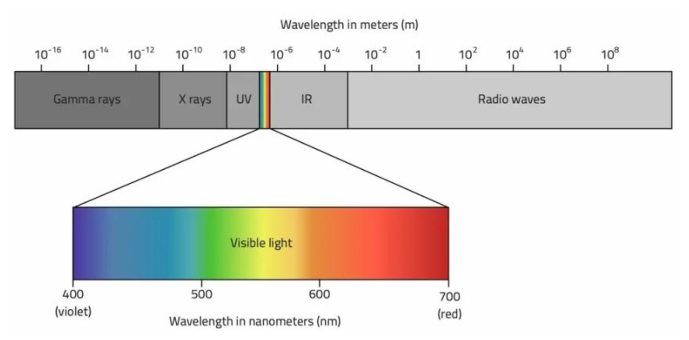
White light can be split into a spectrum in a process called dispersion. White light disperses as it refracts through a triangular prism:
- Short wavelengths (violet, about 400 nm) refract the most, forming one end of the spectrum.
- Long wavelengths (red, about 700 nm) refract the least, forming the other end.
- In order: ROYGBV (red, orange, yellow, green, blue, violet).
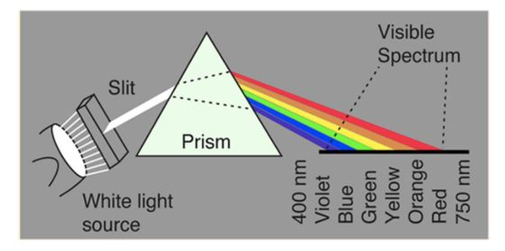
We see colour using the cone photoreceptors in our retinas. The mix of red, green and blue light entering our eye is interpreted as a specific colour.
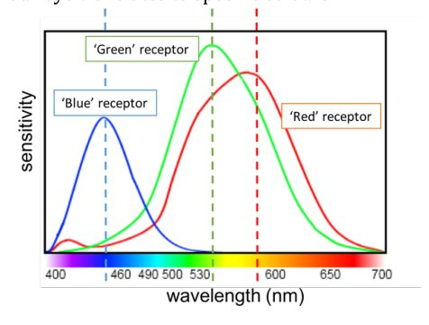
- A red object looks red because it absorbs all colours other than red (long wavelengths). We detect the reflected red light.
- A blue object absorbs the middle (green) and long (red) wavelengths and reflects blue light.
- Other colours come from more than one type of cone detecting light.
Colour addition and applications
Colour addition of light combines the primary colours (red, green and blue) to make the secondary colours (cyan, magenta and yellow).
- red + green = yellow
- red + blue = magenta
- green + blue = cyan
- red + green + blue = white
By combining the primary colours in different proportions, you can create any colour.
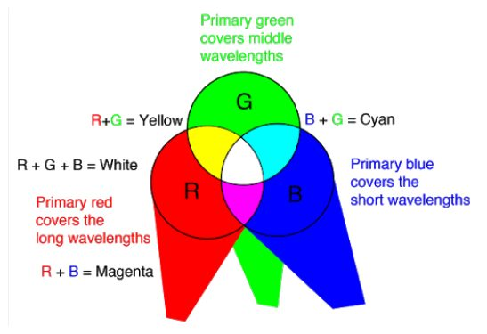
All colour screens use this idea. Smaller, more closely spaced RGB pixels give greater resolution.
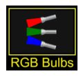
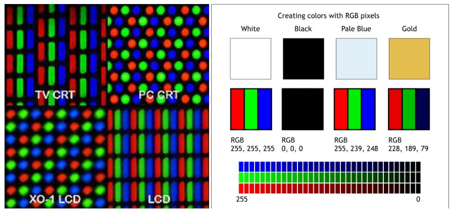
Colour subtraction and applications
Colour subtraction uses a material (an ink, dye or filter) to absorb certain wavelengths, removing them to create a new colour. Printing on paper and using filters both rely on colour subtraction.
- Yellow subtracts (absorbs) short blue wavelengths.
- Magenta subtracts middle green wavelengths.
- Cyan subtracts long red wavelengths.
- Cyan + magenta + yellow together subtract everything, giving black.
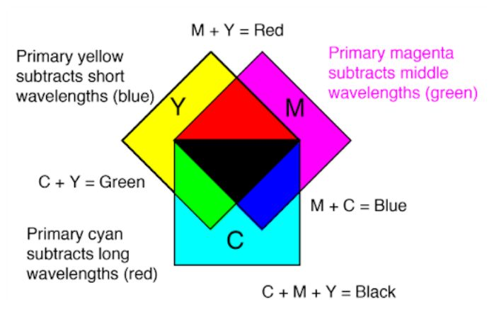
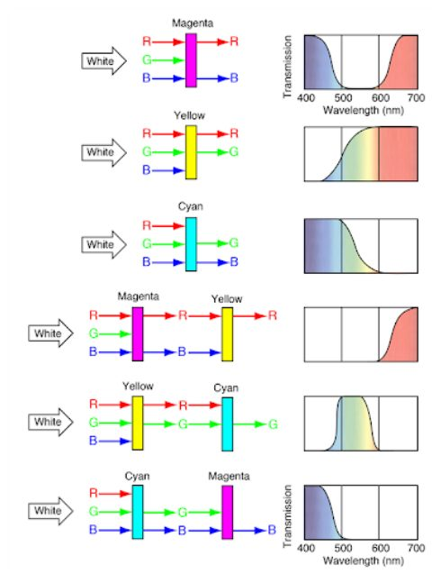
For printing on paper, black is also used to improve contrast, so the colour palette is CMYK (cyan, magenta, yellow and black). Colour printing uses closely spaced dots of varying sizes.
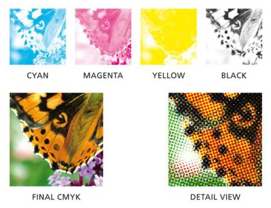
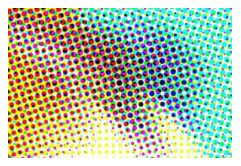
Experiment: colour addition and subtraction
Aims: to investigate the dispersion of white light through a triangular prism, the addition of coloured light, and colour subtraction using filters.
Materials: HLB, AC/DC power supply, single-slit slide, two triangular prisms, colour filters, colour cards, ray-tracing paper.
Part 1, dispersion: shine a single ray into a triangular prism and rotate it until a band of colours appears. Mark which colour is bent most and least. Use a second prism to recombine the colours into white light.
Part 2, colour addition: put red, green and blue filters in the light box, project the beams onto white paper and overlap them.
Part 3, colour subtraction: look at red, green, blue and white cards through magenta, yellow and cyan filters.
| Colours of the mixing light beams | Colour of the combined beams |
|---|---|
| Red + green | |
| Red + blue | |
| Green + blue | |
| Red + green + blue | |
| Yellow + blue | |
| Magenta + green | |
| Cyan + red |
Yellow is red + green, so yellow + blue contains all three primaries, which makes white. The same applies to magenta + green and cyan + red.
How does each colour card appear when viewed through each filter?
| Card | Magenta filter | Yellow filter | Cyan filter |
|---|---|---|---|
| Red | |||
| Green | |||
| Blue | |||
| White |
A magenta filter lets red and blue through, a yellow filter lets red and green through, and a cyan filter lets green and blue through. A card looks black if the filter blocks the only colour it reflects.
Questions
List all the colours of the spectrum, from the colour bent least to the colour bent most.
, , , , , ,
Explain the meaning of light dispersion and give three examples of places where you might notice this effect.
Dispersion is the splitting of white light into its separate colours (a spectrum), because different wavelengths refract by different amounts: violet bends the most and red the least. Examples: a rainbow (sunlight dispersed by raindrops), light through a glass prism, sparkles of colour from a diamond or crystal, or the spray of a garden hose or waterfall.
Use red, green and blue to describe the colours reflected and absorbed in white light.
| Object | Colours reflected | Colours absorbed |
|---|---|---|
| Red convertible | ||
| Yellow banana | ||
| Blue jeans | ||
| Magenta bowling ball | ||
| White dove | ||
| Black bowling ball |
- A red frog under blue light looks .
- Cyan dots printed very close to yellow dots look .
- Magenta dots printed very close to yellow dots look .
- White light passed through a magenta filter, then a cyan filter, emerges as .
4: a red frog reflects only red, and there is no red in blue light, so it reflects nothing. 5: yellow absorbs blue and cyan absorbs red, leaving green. 6: yellow absorbs blue and magenta absorbs green, leaving red. 7: magenta passes red and blue; cyan then removes the red, leaving blue.
James and Daniel are relaxing on a beach. James wears cyan-tinted glasses and Daniel wears yellow ones. Brian runs past in a red t-shirt, green shorts and a blue cap. Describe how each boy sees Brian's clothing.
James (cyan glasses, which let green and blue through and block red): the red t-shirt looks black, the green shorts look green, and the blue cap looks blue.
Daniel (yellow glasses, which let red and green through and block blue): the red t-shirt looks red, the green shorts look green, and the blue cap looks black.
Section 2.6: Key summary questions
Quentin looks at a black bowling ball through a red filter. He expected the ball to look red, because the filter transmits red light. Explain why the ball appears black.
A black object absorbs all colours and reflects no light. Since no red light reflects off the ball, there is no red light for the filter to transmit, so the ball still looks black.
Explain why you feel cooler wearing white clothing in a very warm climate.
White clothes reflect all the light that falls on them, so they absorb less radiation (including infrared/heat) from the Sun than dark clothes, keeping you cooler.
- A green frog under yellow light would appear .
- One colour of light that would make the green frog appear black:
Yellow light contains red and green, and the frog reflects the green. Red light contains no green, so the frog reflects nothing and looks black (blue or magenta light would work too).
For each case, identify the final colour that emerges.
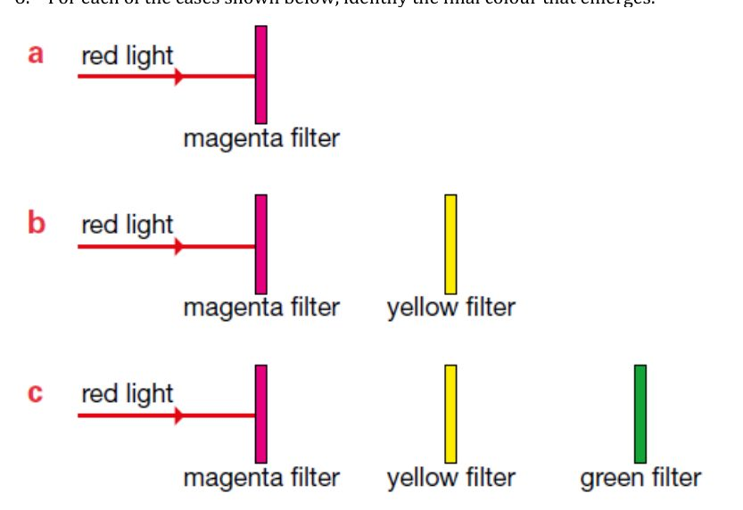
Magenta and yellow filters both let red through, so red light passes. A green filter blocks red, so no light emerges in (c).